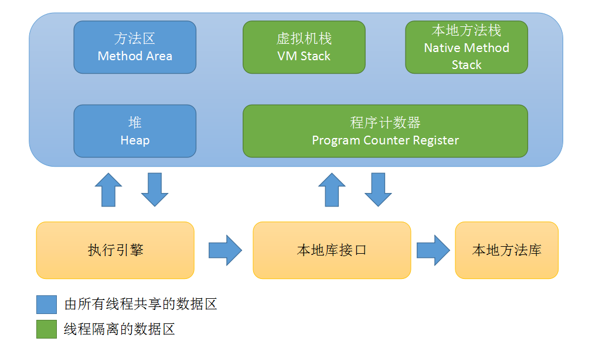
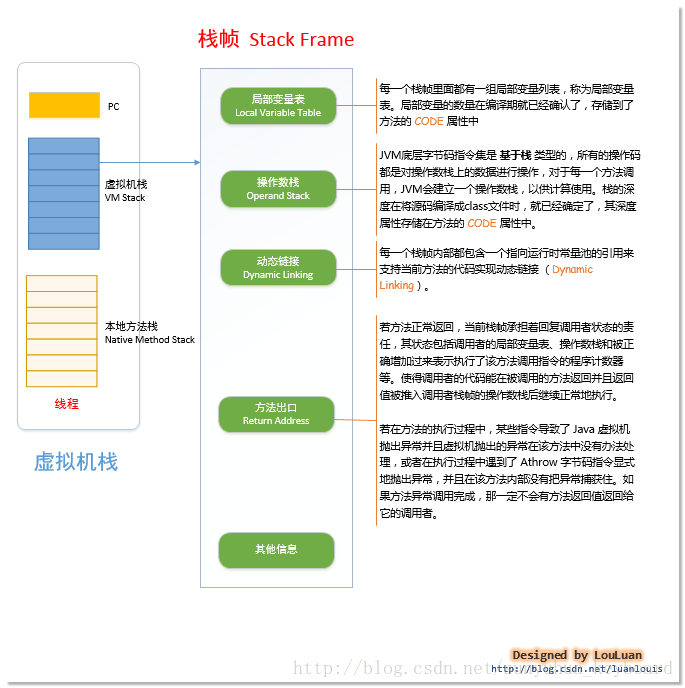
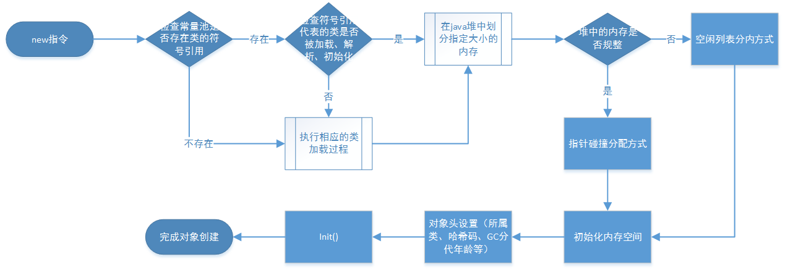
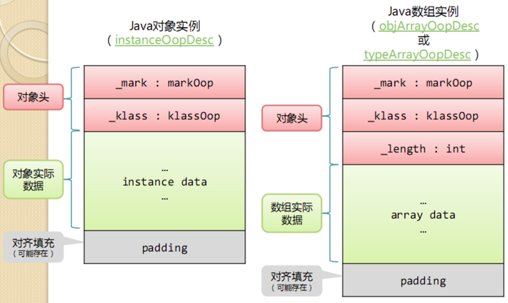

Java内存区域与对象

程序计数器
程序计数器（Program Counter Register）是一块较小内存空间，它可以看作当前线程执行的字节码行为指示器。
如果线程正在执行的是一个Java方法，这个计数器记录的是正在执行的虚拟机字节码指令地址；
如果正在执行的是Native方法，这个计数器值为空（Undefined）。此内存区域是唯一一个在Java虚拟机规范中没有任何（OutOfMemoryError）情况区域。
Java虚拟机栈
与程序计数器一样，Java虚拟机栈（Java Virtual Machine Stacks）也是线程私有的，他的生命周期和线程相同，每个方法执行时都会创建一个栈帧（Stack Frame）用于存储局部变量表，操作数栈，动态链接，方法出口等信息。

Java虚拟机规范对这个区域规定了两种异常情况：
如果线程请求的栈深度大于虚拟机所允许的深度，将抛出StackOverflowError 异常； 如果虚拟机栈可以动态扩展，如果扩展时无法申请到足够的内存，就会抛出OutOfMemoryError异常； （当前大部分JVM都可以动态扩展，只不过JVM规范也允许固定长度的虚拟机栈）
本地方法栈
该区域与虚拟机栈所发挥的作用非常相似，只是虚拟机栈为虚拟机执行 Java 方法服务，而本地方法栈则为使用到的本地操作系统（Native）方法服务。
Java 堆
Java Heap 是 Java 虚拟机所管理的内存中最大的一块，它是所有线程共享的一块内存区域。几乎所有的对象实例和数组都在这类分配内存。Java Heap 是垃圾收集器管理的主要区域，因此很多时候也被称为“GC堆”。
根据 Java 虚拟机规范的规定，Java 堆可以处在物理上不连续的内存空间中，只要逻辑上是连续的即可。如果在堆中没有内存可分配时，并且堆也无法扩展时，将会抛出 OutOfMemoryError 异常。
方法区
方法区也是各个线程共享的内存区域，它用于存储已经被虚拟机加载的类信息、常量、静态变量、即时编译器编译后的代码等数据。方法区域又被称为“永久代”，但这仅仅对于 Sun HotSpot 来讲，JRockit 和 IBM J9 虚拟机中并不存在永久代的概念。Java 虚拟机规范把方法区描述为 Java 堆的一个逻辑部分，而且它和 Java Heap 一样不需要连续的内存，可以选择固定大小或可扩展，另外，虚拟机规范允许该区域可以选择不实现垃圾回收。相对而言，垃圾收集行为在这个区域比较少出现。该区域的内存回收目标主要针是对废弃常量的和无用类的回收。运行时常量池是方法区的一部分，Class 文件中除了有类的版本、字段、方法、接口等描述信息外，还有一项信息是常量池（Class文件常量池），用于存放编译器生成的各种字面量和符号引用，这部分内容将在类加载后存放到方法区的运行时常量池中。运行时常量池相对于 Class 文件常量池的另一个重要特征是具备动态性，Java 语言并不要求常量一定只能在编译期产生，也就是并非预置入 Class 文件中的常量池的内容才能进入方法区的运行时常量池，运行期间也可能将新的常量放入池中，这种特性被开发人员利用比较多的是 String 类的 intern()方法。
根据 Java 虚拟机规范的规定，当方法区无法满足内存分配需求时，将抛出 OutOfMemoryError 异常。
直接内存
直接内存并不是虚拟机运行时数据区的一部分，也不是 Java 虚拟机规范中定义的内存区域，它直接从操作系统中分配，因此不受 Java 堆大小的限制，但是会受到本机总内存的大小及处理器寻址空间的限制，因此它也可能导致 OutOfMemoryError 异常出现。在 JDK1.4 中新引入了 NIO 机制，它是一种基于通道与缓冲区的新 I/O 方式，可以直接从操作系统中分配直接内存，即在堆外分配内存，这样能在一些场景中提高性能，因为避免了在 Java 堆和 Native 堆中来回复制数据。
对象创建

对象的创建在并发场景也是非线程安全，解决这个并发问题有两种方案:
一种是对分配内存空间的动作进行同步处理–实际上虚拟机采用CAS配上失败重试的方式保证更新操作的原子性；
另一种把内存分配的动作按照线程划分在不同的空间中进行，即每个线程在Java堆中预分配一块小内存，称为本地线程分配缓冲（Thread Local Allocation Buffer，TLAB），哪个线程要分配内存，就在哪个线程TLAB上分配，只有TLAB用完并分配新的TLAB时，才需要同步锁定。虚拟机是否使用TLAB上分配，可以通过-XX：+/-UseTLAB参数来设定。
对象的内存布局
在HotSpot虚拟机中，对象在内存中存储布局可以分为3块区域：对象头（Header）、实例数据（Instance Data）和对齐填充（Padding）。 
对象头
HotSpot虚拟机的对象头包括两部分信息，第一部分信息用于存储对象自身运行时的数据，如哈希码（HasCode）、GC分代年龄、锁状态标志、线程持有的锁、偏向线程ID、偏向时间戳等，这部分数据的长度在32位和64位的虚拟机（为开启压缩指针）中分别为32bit和64bit，官方称他为Mark Word。
对象头的另外一部分是类型指针，即对象只想她的类元数据的指针，虚拟机通过这个指针来确定这个对象是哪个类的实例。
如果对象是Java数组，那么在对象头中还必须有一块用于记录数组长度的数据，因为虚拟机可以通过普通Java对象的元数据信息确定Java对象的大小，但是从数组的元数据却无法确定数组的大小。

实例数据
实例数据部分是对象真正存储的有效信息，也是在程序代码中所定义的各种类型的字段内容。无论是从父类继承下来的，还是在子类中定义的，都需要记录起来。
对齐填充
第三部分对齐填充并不是必然存在的，也没有特别的含义，它仅仅起着占位符的作用。由于HotSpot VM的自动内存管理系统要求对象起始地址必须是8字节的整数倍，换句话说，就是对象的大小必须是8字节的整数倍。而对象头部分正好是8字节的倍数（1倍或者2倍），因此，当对象实例数据部分没有对齐时，就需要通过对齐填充来补全。
对象大小计算
在32位系统下，存放Class指针的空间大小是4字节，MarkWord是4字节，对象头为8字节。
在64位系统下，存放Class指针的空间大小是8字节，MarkWord是8字节，对象头为16字节。
64位开启指针压缩的情况下，存放Class指针的空间大小是4字节，MarkWord是8字节，对象头为12字节。
数组长度4字节+数组对象头8字节(对象引用4字节（未开启指针压缩的64位为8字节）+数组markword为4字节（64位未开启指针压缩的为8字节）)+对齐4=16字节。
静态属性不算在对象大小内。
https://www.slideshare.net/ol_beta/java-37390750